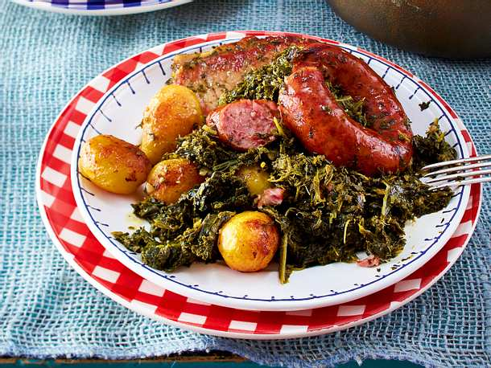

Gruenkohl

Description
A north German specialty, Gruenkohl (kale) and sausage was something with which my mother-in-law warmed our hearts and tummies in the winter. The north Germans serve this with boiled potatoes.
Steps
- Bring a pot of water to a boil, and stir in the kale; boil for 1 minute, and remove from the water with a slotted spoon. Set the blanched kale aside.
- Place bacon into a large skillet over medium heat, and cook until browned, stirring frequently, about 8 minutes. Stir in the onion, and cook until translucent, about 5 minutes. Stir in the blanched kale, and cook until kale is bright green and starting to turn tender, about 4 minutes. Pour in enough water to cover, and bring the mixture to a boil. Reduce heat to a simmer, and stir in the beef bouillon granules and nutmeg. Simmer the kale until tender, about 30 minutes.
- Stir the mustard into the kale, and lay the ham slices and sausage links on top. Simmer the kale, ham, and sausages until the sausages are cooked through, about 35 more minutes. Season to taste with salt and black pepper before serving.